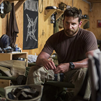
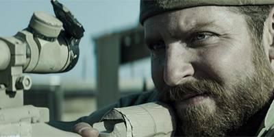
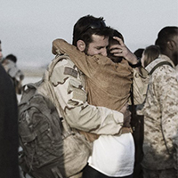
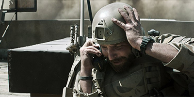

Growing up in Texas, Chris Kyle is taught by his father how to shoot a rifle and hunt deer. Years later, Chris has become a rodeo cowboy and returns home to find his girlfriend in bed with a stranger. After telling her to leave, he is mulling it over with his brother when he sees news coverage of the 1998 U.S. embassy bombings and decides to enlist in the navy. There he is eventually accepted for special training, becoming a U.S. Navy SEALs sniper. Chris meets Taya Renae at a bar, and the two eventually get married Later he is sent to Iraq after the September 11 attacks of 2001. His first kills are a woman and boy who attacked U.S. Marines with a grenade. Chris is visibly upset by the experience but later earns the nickname "Legend" for his many kills. Assigned to hunt for the al-Qaeda leader Abu Musab al-Zarqawi, Chris interrogates a family where the father offers to lead the SEALs to "The Butcher", al-Zarqawi's second-in-command. The plan goes awry when The Butcher captures the father and his son, killing them while Chris is pinned down by a sniper using a PSL. This sniper goes by the name Mustafa and is an Olympic Games medalist from Syria. Meanwhile, the insurgents issue a bounty on Chris.
   